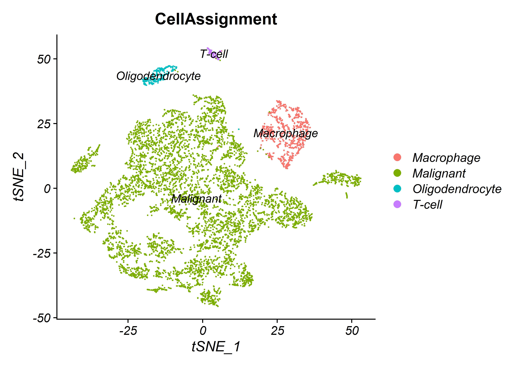

SCRNA-seq analysis - Glioblasotma
glioblastoma data was obtained from single cell portal. single cell analysis executed with R program and Seurat package, Pallad expression was examined in glioblastoma data. 
Libreries
pacman library purpose is to load multiple libraries from a vector
labrvec <- c("tidyverse","ggplot2","Seurat", "future","stringr",
"readxl","stats","ggsignif","reshape2","ggpubr")
#stat_compare_means(test="kruskal.test")
pacman::p_load(labrvec,install = TRUE,character.only = TRUE)
library(ggpubr)Files
Loading relevant files, because i have already prepared the rds for plot i will load the rds file
glioblastoma_seurat <- readRDS("glioblastoma_seurat.rds")
# original files
# glioblastoma_metadata <- read.csv(file = "IDHwt.GBM.Metadata.SS2.txt",sep ="\t",stringsAsFactors = FALSE)
#
# glioblastoma_expressed_matrix <- read.csv("IDHwtGBM.processed.SS2.logTPM.txt" ,sep = "\t")Processing data
editing features to work with Seurat package
reading metadata looking & processing
head(glioblastoma_metadata)
## data looking
# glioblastoma_seurat <- StashIdent(object = glioblastoma_seurat, save.name = "old.ident")
Idents(glioblastoma_seurat) <- "CellAssignment"
# drop NA from the seurat object metadata
# glioblastoma_seurat[["percent.mt"]] <- PercentageFeatureSet(object = glioblastoma_seurat, pattern = "^MT-")
# reading metadata & processing metada:
#
# glioblastoma_metadata <- glioblastoma_metadata[-1,]
# row.names(glioblastoma_metadata) <- pull(glioblastoma_metadata,"NAME" )
# glioblastoma_metadata <- glioblastoma_metadata[,-1]
# glioblastoma_metadata$GBMType %>% unique()
# glioblastoma_metadata$CellAssignment %>% unique()
#
# colnames(glioblastoma_metadata)
# reading expression matrix processed
# processing expression matrix
# row.names(glioblastoma_expressed_matrix) <- pull(glioblastoma_expressed_matrix,"GENE")
# glioblastoma_expressed_matrix <- glioblastoma_expressed_matrix[,-1]
#
# colnames(glioblastoma_expressed_matrix) <-str_replace_all(colnames(glioblastoma_expressed_matrix),"\\.","-")
# creating seurat object :
# glioblastoma_seurat <- CreateSeuratObject(
# glioblastoma_expressed_matrix,
# project = "glioblastoma",
# assay = "RNA",
# min.cells = 0,
# min.features = 0,
# names.field = 1,
# names.delim = "_",
# meta.data = glioblastoma_metadata,
# )
#SubsetBCmatrix <- GetAssayData(object = BCdata, assay.type = "RNA", slot = "counts")
plot1 <- FeatureScatter(glioblastoma_seurat, feature1 = "nCount_RNA", feature2 = "percent.mt")
plot2 <- FeatureScatter(glioblastoma_seurat, feature1 = "nCount_RNA", feature2 = "nFeature_RNA")
plot2
plot1
VlnPlot(glioblastoma_seurat, features = c("nFeature_RNA", "nCount_RNA","percent.mt"), ncol = 3,pt.size = 0)
### FeatureScatter(object = seurat, feature1 = ?, feature2 = ?) ## could be genes or meta data columnsVariable Features plot
normalize data will be for new data
glioblastoma_seurat <- NormalizeData(glioblastoma_seurat)
Variable gene selection
glioblastoma_seurat <- FindVariableFeatures(glioblastoma_seurat, selection.method = “vst”, nfeatures = 2000)
scale data:
glioblastoma_seurat <- ScaleData(glioblastoma_seurat)
glioblastoma_seurat <- RunPCA(glioblastoma_seurat, features = VariableFeatures(object = glioblastoma_seurat))
## what are our variable genes ?
top10 <- head(VariableFeatures(glioblastoma_seurat), 5)
top10## [1] "RGS1" "VIM" "HLA-DRA" "CD74" "CCL4"# plot variable features with and without labels
plot1 <- VariableFeaturePlot(glioblastoma_seurat)
plot2 <- LabelPoints(plot = plot1, points = top10, repel = TRUE)
plot1 + plot2Dim-PCA plot, Dim-Heatmap
prerform PCA on the scaled data. By default, only the previously determined variable features are used as input, but can be defined using features argument if you wish to choose a different subset.
glioblastoma_seurat <- RunPCA(glioblastoma_seurat, features = VariableFeatures(object = glioblastoma_seurat))
VizDimLoadings(glioblastoma_seurat, dims = 1:2, reduction = "pca")DimPlot(glioblastoma_seurat, reduction = "pca")DimHeatmap(glioblastoma_seurat, dims = 1, cells = 500, balanced = TRUE)DimHeatmap(glioblastoma_seurat, dims = 1:9, cells = 500, balanced = TRUE)JackStraw Plot & ElbowPlot
approximate techniques such as those implemented in ElbowPlot() can be used to reducecomputation time
glioblastoma_seurat <- JackStraw(glioblastoma_seurat, num.replicate = 100)
glioblastoma_seurat <- ScoreJackStraw(glioblastoma_seurat, dims = 1:20)
JackStrawPlot(glioblastoma_seurat, dims = 1:15)
ElbowPlot(glioblastoma_seurat)
DimPlot tsne & Umap
glioblastoma_seurat <- FindNeighbors(glioblastoma_seurat, dims = 1:10)
glioblastoma_seurat <- FindClusters(glioblastoma_seurat, resolution = 0.5
glioblastoma_seurat <- RunUMAP(glioblastoma_seurat, dims = 1:10)
glioblastoma_seurat <- RunTSNE(glioblastoma_seurat, dims = 1:10)
# umap
DimPlot(glioblastoma_seurat, reduction = "umap",group.by = "CellAssignment", label = TRUE)#tsne
DimPlot(glioblastoma_seurat, reduction = "tsne",group.by = "CellAssignment", label = TRUE)vlnPlot
violin plot expression Palld between cell types
# violin plot
# comprasion
my_comp <- list(c("Malignant","Macrophage"),c("Oligodendrocyte","Malignant"),c("T-cell","Malignant"),
c("T-cell","Oligodendrocyte"),c("T-cell","Macrophage"),c("Macrophage","Oligodendrocyte"))
VlnPlot(glioblastoma_seurat, features = "PALLD", sort = FALSE,group.by = "CellAssignment", pt.size = 0) +
theme(title = element_text(size=10),axis.title = element_text(size=8),axis.text.x=element_text(size=6),axis.text.y=element_text(size=8))+
NoLegend()+ ylim(0,6.5)# violint plot
VlnPlot(glioblastoma_seurat, features = "PALLD", sort = FALSE,group.by = "CellAssignment", pt.size = 0) +
theme(title = element_text(size=10),axis.title = element_text(size=8),axis.text.x=element_text(size=6),axis.text.y=element_text(size=8))+
NoLegend()# violin plot multiple se
VlnPlot(glioblastoma_seurat, features = "PALLD", group.by = "CellAssignment", sort = FALSE,pt.size = 0) +
stat_compare_means(method = 'kruskal.test',label.y =6)+ ylim(0,6.5)+xlab("Cell Type")+
stat_summary(fun.data = "mean_sdl", fun.args = list(mult = 1), geom = "pointrange", color = "red",size=0.1)+
geom_signif(comparisons = my_comp,map_signif_level = TRUE, y_position=c(2.5,3,3.5,4,4.5,5))+NoLegend()+
theme(axis.text.x = element_text(angle = 25))Save RDS
to save rds run this command
saveRDS(glioblastoma_seurat, file = “C:/Users/user/Desktop/D/glioblastoma/glioblastoma_seurat.rds”)
References:
SCRNA-seq data Glioblastome(GBM) from single cell portal.
seurat R package used v4.